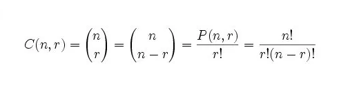

Fonksiyonlar belirli bir görevi yerine getirmek için tasarlanmış kod bloklarıdır. Hazırlanan fonksiyonlar çağrıldığında yürütülerek istenen görev gerçekleştirilir.
Fonksiyoların temel yapısı yukarıdaki gibidir. “function” anahtar kelimesi ile başlar. Daha sonra fonksiyona bir isim verilir. Yukarıdaki fonksiyonda fonk1 ismi verilmiştir.
Fonksiyonları yapacağı işe göre isimlendirmek kolaylık sağlayacaktır. Fonksiyon ismi verildikten sonra “( )” parantez açılır.
Parantezler virgüllerle ayrılmış parametre adlarını içerebilir: (parametre1, parametre2, …)
Parametreler fonksiyon çağrıldığında fonksiyon tarafından alınan değerlerdir. Alınan bu değerler değişkenler gibi davranır ve fonksiyon içerisinde bu şekilde davranır.
{ } süslü parantezler içindeki kısım fonksiyonun çalıştıracağı kodlardır. Bu kodlar fonksiyon çağrıldığında çalışacaktır. Fonksiyonun çağrılması;
Bir olay meydana geldiğinde (kullanıcı bir düğmeyi tıklattığında), JavaScript kodundan çağrıldığında, Otomatik olarak (kendiliğinden) olabilmektedir.
Fonksiyonda kullanılan return ifadesi fonksiyonun geri döndüreceği değer için kullanılır. return ifadesine ulaşıldığında fonksiyon duracaktır.
Yukarıda fonk1 ismiyle oluşturduğumuz fonksiyonu incelediğimizde dışarıdan 2 adet parametre aldığını görmekteyiz (s1,s2).
ve alınan bu iki değerinin çarpımının geriye döndürüldüğünü görüyoruz.
Şimdide oluşturduğumuz bu fonksiyonu nasıl çağırabileceğimize bakalım.
örneği inceleUyarı: Kodu incelemek için örneği incele dedikten sonra CTRL+U tuşuna basınız
Yukarıda fonksiyon kullanımını en basit haliyle gördük. Fonksiyon kullanmaktaki amaç fonksiyon içerisine yazdığımız kodları defalarca kullanabilecek olmamızdır. Biraz daha açalım.
Yukarıda kombinasyon hesaplamak için gerekli formülü görmekteyiz. Biz bu işlemi fonksiyon kullanmadan yapan bir sayfa oluşturacaksak yani kullanıcıdan “n” ve “r” değerini alıp sonucu hesaplayacaksak 3 defa faktoriyel hesabı yapmamız gerekecektir.
(n!, r! ve (n-r)! )
Fakat biz faktoriyel alma işini bir fonksiyona yaptırırsak sadece kullanıcıdan aldığımız bu değerleri fonksiyona yollamamız yeterli olacaktır.
Uyarı: Kodu incelemek için örneği incele dedikten sonra CTRL+U tuşuna basınız
Fonksiyon parametreleri olan isimler fonksiyon tanımında listelenmiş.
İşlev bağımsız değişkenleri , fonksiyona iletilen (ve bu fonksiyon tarafından alınan) gerçek değerlerdir .
JavaScript fonksiyon tanımları, parametreler için veri türlerini belirtmez.
JavaScript fonksiyonları, iletilen bağımsız değişkenlerde tür denetimi gerçekleştirmez.
JavaScript fonksiyonları, alınan bağımsız değişkenlerin sayısını kontrol etmez.
Bir işlev eksik argümanlarla (bildirilenden daha az) çağrılırsa , eksik değerler şu şekilde ayarlanır: tanımsız
Bazen bu kabul edilebilir, ancak bazen parametreye varsayılan bir değer atamak daha iyidir:
örneği inceleUyarı: Kodu incelemek için örneği incele dedikten sonra CTRL+U tuşuna basınız
JavaScript işlevlerinde arguments nesnesi adı verilen yerleşik bir nesne vardır. Bağımsız değişken nesnesi, işlev çağrıldığında (çağrıldığında) kullanılan bir dizi bağımsız değişken içerir.
**Bu şekilde, bir sayı listesindeki en yüksek değeri bulmak (örneğin) için bir fonkiyonu kullanabilirsiniz:
örneği inceleUyarı: Kodu incelemek için örneği incele dedikten sonra CTRL+U tuşuna basınız
**Veya tüm giriş değerlerini toplamak için bir işlev oluşturun:
örneği inceleUyarı: Kodu incelemek için örneği incele dedikten sonra CTRL+U tuşuna basınız
•Bir JavaScript'in içindeki kod function , "bir şey" çağırdığında çalıştırılır.
•Bir işlevin içindeki kod, işlev çağrıldığında yürütülür
•" Bir fonkiyonu çağırmak " yerine " bir fonkiyonu çağır " terimini kullanmak yaygındır .
•"Bir fonkiyonu çağırmak", "bir fonkiyonu başlatmak" veya "bir fonkiyonu yürütmek" demek yaygındır.
•Bu öğreticide, invoke kullanacağız , çünkü bir JavaScript işlevi çağrılmadan çağrılabilir.
Uyarı: Kodu incelemek için örneği incele dedikten sonra CTRL+U tuşuna basınız
myFunction () ve window.myFunction () aynı işlevdir:
örneği inceleUyarı: Kodu incelemek için örneği incele dedikten sonra CTRL+U tuşuna basınız
JavaScript'te işlevleri nesne yöntemleri olarak tanımlayabilirsiniz.
Aşağıdaki örnek , iki özellik ( firstName ve lastName ) ve bir yöntem ( fullName ) içeren bir nesne ( myObject ) oluşturur :
örneği inceleUyarı: Kodu incelemek için örneği incele dedikten sonra CTRL+U tuşuna basınız
FullName yöntemi, bir fonksiyonudur. İşlev nesneye aittir. myObject , işlevin sahibidir.
Denilen şey this, JavaScript koduna "sahip" olan nesnedir. Bu durumda değeri this olan myObject .
Dene! Değerini döndürmek için fullName yöntemini değiştirin this:
örneği inceleUyarı: Kodu incelemek için örneği incele dedikten sonra CTRL+U tuşuna basınız
***Bir işlevi nesne yöntemi olarak çağırmak, değerinin this nesnenin kendisi olmasına neden olur .
İle apply() yöntemle, farklı nesneler üzerinde kullanılabilecek bir yöntem yazabilirsiniz.
apply() )Yöntemine benzer call() bir yöntem (bir önceki bölüm).
örneği inceleUyarı: Kodu incelemek için örneği incele dedikten sonra CTRL+U tuşuna basınız
Fark şu:
call() Yöntem argüman alır ayrı ayrı .
apply() Yöntem, olarak argüman alır dizisi .
•En büyük sayıyı (sayı listesinde) Math.max() yöntemi kullanarak bulabilirsiniz :
örneği inceleUyarı: Kodu incelemek için örneği incele dedikten sonra CTRL+U tuşuna basınız
•JavaScript dizilerinin bir max () yöntemi olmadığından, yöntemi uygulayabilirsiniz Math.max().
örneği inceleUyarı: Kodu incelemek için örneği incele dedikten sonra CTRL+U tuşuna basınız
•İlk argüman (null) önemli değil. Bu örnekte kullanılmamaktadır. Bu örnekler aynı sonucu verecektir:
örneği inceleUyarı: Kodu incelemek için örneği incele dedikten sonra CTRL+U tuşuna basınız
Uyarı: Kodu incelemek için örneği incele dedikten sonra CTRL+U tuşuna basınız
Uyarı: Kodu incelemek için örneği incele dedikten sonra CTRL+U tuşuna basınız